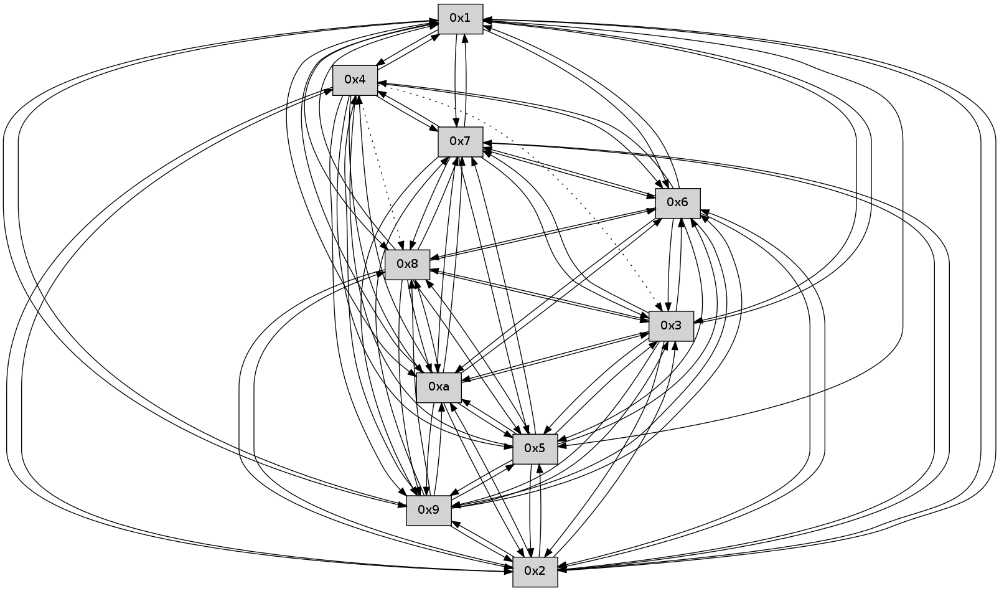

>> << IDX [start] -100 -25 -5 +0 +5 +25 +100 [300.008126974]
 Previous packets
----------------------------------------------------------------------
295.189348 beacon01(faad) #0 coord=01,02,03,04,05,06,07,0a,09,08 cycle=688.0ms assoc
-- color-indic=0 64 0c a1
295.199333 beacon02(faad) #0 coord=01,02,03,04,05,06,07,0a,09,08 cycle=688.0ms assoc 64 9f 90
295.209332 beacon03(faad) #0 coord=01,02,03,04,05,06,07,0a,09,08 cycle=688.0ms assoc 64 e5 dd
295.219332 beacon04(faad) #0 coord=01,02,03,04,05,06,07,0a,09,08 cycle=688.0ms assoc 64 92 37
295.229333 beacon05(faad) #0 coord=01,02,03,04,05,06,07,0a,09,08 cycle=688.0ms assoc 64 e8 7a
295.239332 beacon06(faad) #0 coord=01,02,03,04,05,06,07,0a,09,08 cycle=688.0ms assoc 64 66 ad
295.249331 beacon07(faad) #0 coord=01,02,03,04,05,06,07,0a,09,08 cycle=688.0ms assoc 64 1c e0
295.259335 beacon0a(faad) #0 coord=01,02,03,04,05,06,07,0a,09,08 cycle=688.0ms assoc 64 6d eb
295.269335 beacon09(faad) #0 coord=01,02,03,04,05,06,07,0a,09,08 cycle=688.0ms assoc 64 e3 3c
295.279336 beacon08(faad) #0 coord=01,02,03,04,05,06,07,0a,09,08 cycle=688.0ms assoc 64 99 71
295.290478 [Hello(2): seq=190 sym=4,5,7,6,3,9,8,10,1 sysInfo= stat=4:0,0,0,0/5:4,0,0,0/7:6,0,0,0/6:4,0,0,0/3:7,0,0,0/9:6,0,0,0/8:4,0,0,0/10:0,0,0,0/1:3,0,0,0]
295.294143 [Hello(3): seq=193 sym=5,7,6,2,8,9,10,1 sysInfo= stat=5:9,0,0,0/7:11,0,0,0/6:6,0,0,0/2:9,0,0,0/8:13,0,0,0/9:3,0,0,0/10:11,0,0,0/1:6,0,0,0]
295.299376 [Hello(5): seq=193 sym=7,6,4,3,9,8,10,2 sysInfo= stat=7:13,0,0,0/6:8,0,0,0/4:0,0,0,0/3:13,0,0,0/9:8,0,0,0/8:15,0,0,0/10:3,0,0,0/2:3,0,0,0]
295.302624 [Hello(4): seq=193 sym=5,7,6,2,9,8,10,1 asym=3 sysInfo= stat=5:11,0,0,0/7:0,0,0,0/6:5,0,0,0/2:13,0,0,0/9:9,0,0,0/8:6,0,0,0/10:5,0,0,0/1:0,0,0,0/3:0,0,0,0]
----------------------------------------------------------------------
295.977479 beacon01(faad) #0 coord=01,02,03,04,05,06,07,0a,09,08 cycle=688.0ms assoc
-- color-indic=0 64 b0 a4
295.987461 beacon02(faad) #0 coord=01,02,03,04,05,06,07,0a,09,08 cycle=688.0ms assoc 64 23 95
295.997463 beacon03(faad) #0 coord=01,02,03,04,05,06,07,0a,09,08 cycle=688.0ms assoc 64 59 d8
296.007462 beacon04(faad) #0 coord=01,02,03,04,05,06,07,0a,09,08 cycle=688.0ms assoc 64 2e 32
296.017462 beacon05(faad) #0 coord=01,02,03,04,05,06,07,0a,09,08 cycle=688.0ms assoc 64 54 7f
296.027460 beacon06(faad) #0 coord=01,02,03,04,05,06,07,0a,09,08 cycle=688.0ms assoc 64 da a8
296.037462 beacon07(faad) #0 coord=01,02,03,04,05,06,07,0a,09,08 cycle=688.0ms assoc 64 a0 e5
296.047466 beacon0a(faad) #0 coord=01,02,03,04,05,06,07,0a,09,08 cycle=688.0ms assoc 64 d1 ee
296.057467 beacon09(faad) #0 coord=01,02,03,04,05,06,07,0a,09,08 cycle=688.0ms assoc 64 5f 39
296.067467 beacon08(faad) #0 coord=01,02,03,04,05,06,07,0a,09,08 cycle=688.0ms assoc 64 25 74
296.078638 [Hello(9): seq=136 sym=5,2,3,4,7,6,8,10,1 sysInfo= stat=5:8,0,0,0/2:9,0,0,0/3:9,0,0,0/4:9,0,0,0/7:4,0,0,0/6:12,0,0,0/8:1,0,0,0/10:15,0,0,0/1:4,0,0,0]
296.081300 [Hello(7): seq=193 sym=2,3,5,6,4,8,9,10,1 sysInfo= stat=2:0,0,0,0/3:0,0,0,0/5:12,0,0,0/6:10,0,0,0/4:1,0,0,0/8:3,0,0,0/9:4,0,0,0/10:1,0,0,0/1:0,0,0,0]
296.085778 [Hello(8): seq=136 sym=5,2,3,7,6,9,10,1 sysInfo= stat=5:2,0,0,0/2:2,0,0,0/3:2,0,0,0/7:5,0,0,0/6:9,0,0,0/9:11,0,0,0/10:11,0,0,0/1:2,0,0,0]
296.088298 [Hello(6): seq=193 sym=2,3,5,4,7,9,8,10,1 sysInfo= stat=2:5,0,0,0/3:2,0,0,0/5:9,0,0,0/4:12,0,0,0/7:1,0,0,0/9:7,0,0,0/8:8,0,0,0/10:6,0,0,0/1:5,0,0,0]
296.091184 [Hello(10): seq=125 sym=6,3,2,5,9,8,7,4,1 sysInfo= stat=6:5,0,0,0/3:3,0,0,0/2:1,0,0,0/5:2,0,0,0/9:6,0,0,0/8:15,0,0,0/7:10,0,0,0/4:1,0,0,0/1:6,0,0,0]
----------------------------------------------------------------------
296.765610 beacon01(faad) #0 coord=01,02,03,04,05,06,07,0a,09,08 cycle=688.0ms assoc
-- color-indic=0 64 74 aa
296.775592 beacon02(faad) #0 coord=01,02,03,04,05,06,07,0a,09,08 cycle=688.0ms assoc 64 e7 9b
296.785592 beacon03(faad) #0 coord=01,02,03,04,05,06,07,0a,09,08 cycle=688.0ms assoc 64 9d d6
296.795592 beacon04(faad) #0 coord=01,02,03,04,05,06,07,0a,09,08 cycle=688.0ms assoc 64 ea 3c
296.805592 beacon05(faad) #0 coord=01,02,03,04,05,06,07,0a,09,08 cycle=688.0ms assoc 64 90 71
296.815594 beacon06(faad) #0 coord=01,02,03,04,05,06,07,0a,09,08 cycle=688.0ms assoc 64 1e a6
296.825594 beacon07(faad) #0 coord=01,02,03,04,05,06,07,0a,09,08 cycle=688.0ms assoc 64 64 eb
296.835597 beacon0a(faad) #0 coord=01,02,03,04,05,06,07,0a,09,08 cycle=688.0ms assoc 64 15 e0
296.845599 beacon09(faad) #0 coord=01,02,03,04,05,06,07,0a,09,08 cycle=688.0ms assoc 64 9b 37
296.855600 beacon08(faad) #0 coord=01,02,03,04,05,06,07,0a,09,08 cycle=688.0ms assoc 64 e1 7a
296.866716 [Hello(3): seq=194 sym=5,7,6,2,8,9,10,1 sysInfo= stat=5:10,0,0,0/7:12,0,0,0/6:7,0,0,0/2:9,0,0,0/8:14,0,0,0/9:4,0,0,0/10:12,0,0,0/1:6,0,0,0]
296.869043 [Hello(4): seq=194 sym=5,7,6,2,9,10,1 asym=3,8 sysInfo= stat=5:11,0,0,0/7:1,0,0,0/6:6,0,0,0/2:13,0,0,0/9:10,0,0,0/10:6,0,0,0/1:0,0,0,0/3:0,0,0,0/8:7,0,0,0]
296.872961 [Hello(2): seq=191 sym=4,5,7,6,3,9,8,10,1 sysInfo= stat=4:1,0,0,0/5:5,0,0,0/7:7,0,0,0/6:5,0,0,0/3:8,0,0,0/9:7,0,0,0/8:5,0,0,0/10:1,0,0,0/1:3,0,0,0]
296.879298 [Hello(5): seq=194 sym=7,6,4,3,9,8,10,2 sysInfo= stat=7:14,0,0,0/6:9,0,0,0/4:1,0,0,0/3:13,0,0,0/9:9,0,0,0/8:0,0,0,0/10:4,0,0,0/2:3,0,0,0]
----------------------------------------------------------------------
297.553742 beacon01(faad) #0 coord=01,02,03,04,05,06,07,0a,09,08 cycle=688.0ms assoc
-- color-indic=0 64 c8 af
297.563724 beacon02(faad) #0 coord=01,02,03,04,05,06,07,0a,09,08 cycle=688.0ms assoc 64 5b 9e
297.573724 beacon03(faad) #0 coord=01,02,03,04,05,06,07,0a,09,08 cycle=688.0ms assoc 64 21 d3
297.583724 beacon04(faad) #0 coord=01,02,03,04,05,06,07,0a,09,08 cycle=688.0ms assoc 64 56 39
297.593726 beacon05(faad) #0 coord=01,02,03,04,05,06,07,0a,09,08 cycle=688.0ms assoc 64 2c 74
297.603724 beacon06(faad) #0 coord=01,02,03,04,05,06,07,0a,09,08 cycle=688.0ms assoc 64 a2 a3
297.613726 beacon07(faad) #0 coord=01,02,03,04,05,06,07,0a,09,08 cycle=688.0ms assoc 64 d8 ee
297.623730 beacon0a(faad) #0 coord=01,02,03,04,05,06,07,0a,09,08 cycle=688.0ms assoc 64 a9 e5
297.633730 beacon09(faad) #0 coord=01,02,03,04,05,06,07,0a,09,08 cycle=688.0ms assoc 64 27 32
297.643732 beacon08(faad) #0 coord=01,02,03,04,05,06,07,0a,09,08 cycle=688.0ms assoc 64 5d 7f
297.655200 [Hello(10): seq=126 sym=6,3,2,5,9,8,7,4,1 sysInfo= stat=6:5,0,0,0/3:4,0,0,0/2:1,0,0,0/5:3,0,0,0/9:6,0,0,0/8:15,0,0,0/7:10,0,0,0/4:2,0,0,0/1:7,0,0,0]
297.661431 [Hello(7): seq=194 sym=2,3,5,6,4,8,9,10,1 sysInfo= stat=2:1,0,0,0/3:1,0,0,0/5:13,0,0,0/6:11,0,0,0/4:2,0,0,0/8:4,0,0,0/9:4,0,0,0/10:2,0,0,0/1:0,0,0,0]
297.664441 [Hello(9): seq=137 sym=5,2,3,4,7,6,8,10,1 sysInfo= stat=5:9,0,0,0/2:10,0,0,0/3:10,0,0,0/4:10,0,0,0/7:5,0,0,0/6:13,0,0,0/8:2,0,0,0/10:0,0,0,0/1:4,0,0,0]
297.669023 [Hello(6): seq=194 sym=2,3,5,4,7,9,8,10,1 sysInfo= stat=2:6,0,0,0/3:3,0,0,0/5:10,0,0,0/4:13,0,0,0/7:1,0,0,0/9:7,0,0,0/8:8,0,0,0/10:7,0,0,0/1:5,0,0,0]
----------------------------------------------------------------------
298.341875 beacon01(faad) #0 coord=01,02,03,04,05,06,07,0a,09,08 cycle=688.0ms assoc
-- color-indic=0 64 fc b7
298.351857 beacon02(faad) #0 coord=01,02,03,04,05,06,07,0a,09,08 cycle=688.0ms assoc 64 6f 86
298.361858 beacon03(faad) #0 coord=01,02,03,04,05,06,07,0a,09,08 cycle=688.0ms assoc 64 15 cb
298.371859 beacon04(faad) #0 coord=01,02,03,04,05,06,07,0a,09,08 cycle=688.0ms assoc 64 62 21
298.381858 beacon05(faad) #0 coord=01,02,03,04,05,06,07,0a,09,08 cycle=688.0ms assoc 64 18 6c
298.391859 beacon06(faad) #0 coord=01,02,03,04,05,06,07,0a,09,08 cycle=688.0ms assoc 64 96 bb
298.401861 beacon07(faad) #0 coord=01,02,03,04,05,06,07,0a,09,08 cycle=688.0ms assoc 64 ec f6
298.411864 beacon0a(faad) #0 coord=01,02,03,04,05,06,07,0a,09,08 cycle=688.0ms assoc 64 9d fd
298.421862 beacon09(faad) #0 coord=01,02,03,04,05,06,07,0a,09,08 cycle=688.0ms assoc 64 13 2a
298.431863 beacon08(faad) #0 coord=01,02,03,04,05,06,07,0a,09,08 cycle=688.0ms assoc 64 69 67
298.445759 [Hello(1): seq=103 sym=4,2,9,5,10,3,8,6,7 sysInfo= stat=4:1,0,0,0/2:13,0,0,0/9:3,0,0,0/5:2,0,0,0/10:4,0,0,0/3:6,0,0,0/8:2,0,0,0/6:9,0,0,0/7:12,0,0,0]
298.448954 [Hello(4): seq=195 sym=5,7,6,2,9,10,1 asym=3,8 sysInfo= stat=5:12,0,0,0/7:2,0,0,0/6:7,0,0,0/2:14,0,0,0/9:11,0,0,0/10:7,0,0,0/1:0,0,0,0/3:0,0,0,0/8:7,0,0,0]
298.458440 [Hello(3): seq=195 sym=5,7,6,2,8,9,10,1 sysInfo= stat=5:11,0,0,0/7:13,0,0,0/6:8,0,0,0/2:9,0,0,0/8:14,0,0,0/9:5,0,0,0/10:13,0,0,0/1:7,0,0,0]
----------------------------------------------------------------------
299.130006 beacon01(faad) #0 coord=01,02,03,04,05,06,07,0a,09,08 cycle=688.0ms assoc
-- color-indic=0 64 40 b2
299.139989 beacon02(faad) #0 coord=01,02,03,04,05,06,07,0a,09,08 cycle=688.0ms assoc 64 d3 83
299.149988 beacon03(faad) #0 coord=01,02,03,04,05,06,07,0a,09,08 cycle=688.0ms assoc 64 a9 ce
299.159988 beacon04(faad) #0 coord=01,02,03,04,05,06,07,0a,09,08 cycle=688.0ms assoc 64 de 24
299.169988 beacon05(faad) #0 coord=01,02,03,04,05,06,07,0a,09,08 cycle=688.0ms assoc 64 a4 69
299.179988 beacon06(faad) #0 coord=01,02,03,04,05,06,07,0a,09,08 cycle=688.0ms assoc 64 2a be
299.189988 beacon07(faad) #0 coord=01,02,03,04,05,06,07,0a,09,08 cycle=688.0ms assoc 64 50 f3
299.199995 beacon0a(faad) #0 coord=01,02,03,04,05,06,07,0a,09,08 cycle=688.0ms assoc 64 21 f8
299.209993 beacon09(faad) #0 coord=01,02,03,04,05,06,07,0a,09,08 cycle=688.0ms assoc 64 af 2f
299.219993 beacon08(faad) #0 coord=01,02,03,04,05,06,07,0a,09,08 cycle=688.0ms assoc 64 d5 62
299.231781 [Hello(8): seq=138 sym=5,2,3,7,6,9,10,1 sysInfo= stat=5:3,0,0,0/2:4,0,0,0/3:4,0,0,0/7:6,0,0,0/6:11,0,0,0/9:12,0,0,0/10:12,0,0,0/1:3,0,0,0]
299.234795 [Hello(7): seq=195 sym=2,3,5,6,4,8,9,10,1 sysInfo= stat=2:2,0,0,0/3:2,0,0,0/5:13,0,0,0/6:12,0,0,0/4:3,0,0,0/8:4,0,0,0/9:5,0,0,0/10:2,0,0,0/1:1,0,0,0]
299.238322 [Hello(9): seq=138 sym=5,2,3,4,7,6,8,10,1 sysInfo= stat=5:10,0,0,0/2:10,0,0,0/3:11,0,0,0/4:11,0,0,0/7:5,0,0,0/6:14,0,0,0/8:2,0,0,0/10:0,0,0,0/1:5,0,0,0]
299.241671 [Hello(10): seq=127 sym=6,3,2,5,9,8,7,4,1 sysInfo= stat=6:6,0,0,0/3:5,0,0,0/2:2,0,0,0/5:3,0,0,0/9:7,0,0,0/8:15,0,0,0/7:11,0,0,0/4:3,0,0,0/1:8,0,0,0]
299.246138 [Hello(6): seq=195 sym=2,3,5,4,7,9,8,10,1 sysInfo= stat=2:7,0,0,0/3:4,0,0,0/5:10,0,0,0/4:14,0,0,0/7:1,0,0,0/9:7,0,0,0/8:8,0,0,0/10:7,0,0,0/1:6,0,0,0]
----------------------------------------------------------------------
299.918136 beacon01(faad) #0 coord=01,02,03,04,05,06,07,0a,09,08 cycle=688.0ms assoc
-- color-indic=0 64 84 bc
299.928120 beacon02(faad) #0 coord=01,02,03,04,05,06,07,0a,09,08 cycle=688.0ms assoc 64 17 8d
299.938119 beacon03(faad) #0 coord=01,02,03,04,05,06,07,0a,09,08 cycle=688.0ms assoc 64 6d c0
299.948119 beacon04(faad) #0 coord=01,02,03,04,05,06,07,0a,09,08 cycle=688.0ms assoc 64 1a 2a
299.958120 beacon05(faad) #0 coord=01,02,03,04,05,06,07,0a,09,08 cycle=688.0ms assoc 64 60 67
299.968119 beacon06(faad) #0 coord=01,02,03,04,05,06,07,0a,09,08 cycle=688.0ms assoc 64 ee b0
299.978119 beacon07(faad) #0 coord=01,02,03,04,05,06,07,0a,09,08 cycle=688.0ms assoc 64 94 fd
299.988123 beacon0a(faad) #0 coord=01,02,03,04,05,06,07,0a,09,08 cycle=688.0ms assoc 64 e5 f6
299.998124 beacon09(faad) #0 coord=01,02,03,04,05,06,07,0a,09,08 cycle=688.0ms assoc 64 6b 21